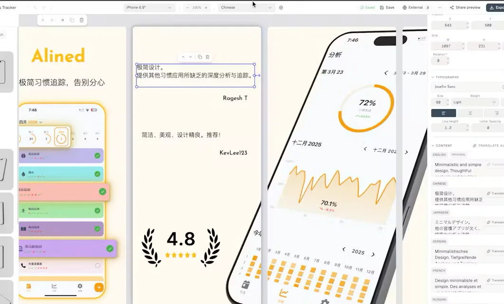
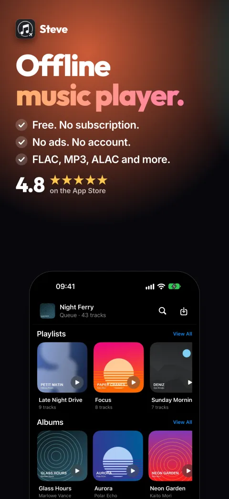
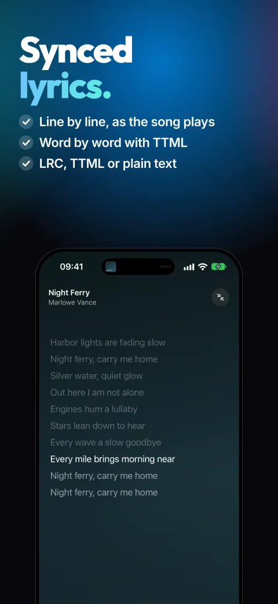
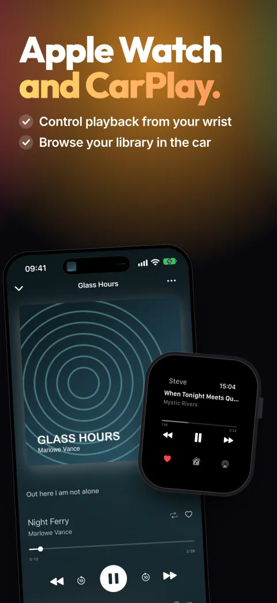

Hamza Rabi
Product engineer and founder. I design, build and run software products, from the first line of code to the people paying for them.
Since 2024 I’ve built and operated five products, my own ventures and client work, across AI SaaS, consumer mobile, restaurant ordering and B2B operations software. Before that I was a product data scientist at talabat (Delivery Hero), working with five product squads across 8+ markets. Based in Morocco.
5
Products built and operated since 2024
20,000+
Organic installs for Steve, with ChatGPT as the top referrer
23,000
Monthly users at ilikeimg’s peak, on a fully serverless stack
~30
Product experiments owned at talabat across 8+ markets
Work
Operations platform for a study abroad and immigration consultancy, replacing WhatsApp threads and spreadsheets. Prospects move from ad to signed client in one system: lead qualification, e-signed contracts sealed with an audit trail, document collection, and Canadian visa forms filled in automatically from client answers.
CRM stages are streamed back to Meta’s Conversions API, so ad campaigns optimize for signed clients rather than form fills, and an automated triage merges duplicate leads and routes them before an agent picks them up.
A studio for App Store screenshots: template library, iPhone, iPad and Apple Watch mockups, and AI localization into every store language.
Taken from beta to paid plans, then discontinued: the market was saturated and there was no acquisition channel that could scale.

An offline music player for people who own their library. 20,000+ installs, around 1,000 daily users and a 4.8 rating, with zero ad spend.
It grew through a Reddit community built around user feedback and a public roadmap. Those threads are now what ChatGPT cites for offline music players, which makes it the app’s top referrer.



A commission-free alternative to delivery aggregators for restaurants that run their own fleets: a merchant suite for ordering, live tracking, rider dispatch and marketing, plus a consumer marketplace.
The concept took shape with feedback from Reddit users, and I sold it door to door, onboarding 3 restaurants and processing live orders. After seed conversations with two investors, I wound it down.
An AI image editing SaaS built on a freemium funnel: free in-browser tools brought people in, paid AI features (merge, upscale, face swap) monetized them. Serverless end to end on AWS, with Stripe billing and Google sign-in.
It scaled to 23,000 monthly users before I retired it, once inference costs outpaced revenue.
Before
Product Data Scientist, talabat (Delivery Hero), Dubai · 2022–2024. Embedded with five product squads, owning their experimentation across 8+ markets. Designed the quarterly holdout that isolated a 1.5% conversion lift from a quarter of shipped features, halted a flawed Search launch, and built the segmentation behind a discounts product that passed 15,000 daily orders within six months.
Freelance Data Analyst · 2020–2021. Sourced and delivered my own projects across marketing, finance and small business: NLP trend detection on Twitter for a digital agency, backtested trading strategies for investors, automated reporting for SMEs.
Data Science Intern, VINCI Energies · 2020. Built a building energy forecasting pipeline end to end, benchmarking five model families before delivering a deep learning model with uncertainty estimates.
M.Eng., École Nationale Supérieure des Mines de Rabat. Arabic, French and English.